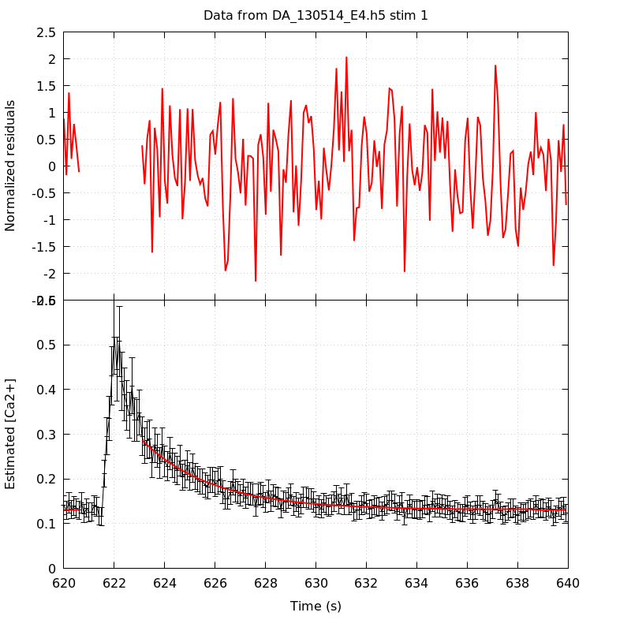
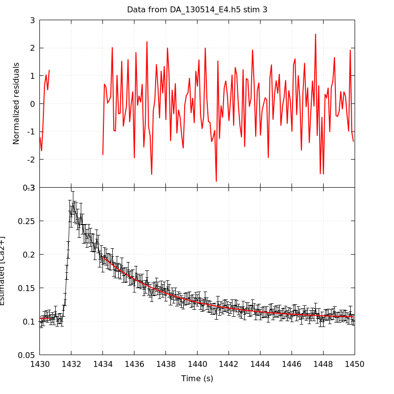
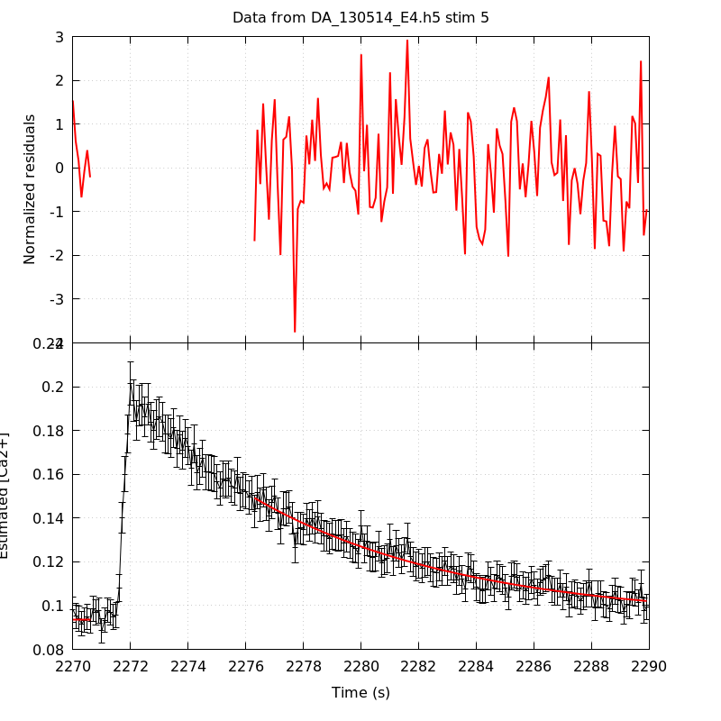
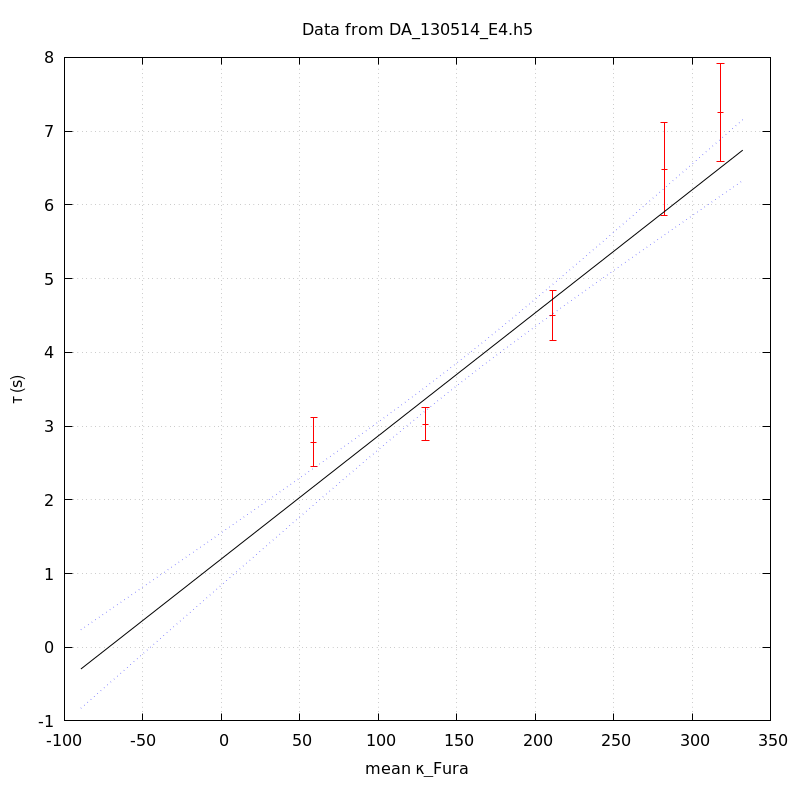

The baseline length is: 7.
When fitting tau against kappa_Fura only the transients for which the fit RSS and the lag 1 auto-correlation of the residuals were small enough, giving an overall probability of false negative of 0.02, were kept (see the numerical summary associated with each transient).
The good transients are: 1, 2, 3, 4, 5.
The time at which the 'good' transients were recorded appear in red.
On each graph, the residuals appear on top. Under the null hypothesis, if the monoexponential fit is correct they should be centered on 0 and have a SD close to 1 (not exactly 1 since parameters were obtained through the fitting procedure form the data.
The estimated [Ca2+] appears on the second row. The estimate is show in black together with pointwise 95% confidence intervals. The fitted curve appears in red. The whole transient is not fitted, only a portion of it is: a portion of the baseline made of 7 points and the decay phase starting at the time where the Delta[Ca2+] has reached 50% of its peak value.
The time appearing on the abscissa is the time from the beginning of the experiment.
Transient 1 is 'good'.

nobs = 176
number of degrees of freedom = 173
baseline length = 7
fit started from point 31
estimated baseline 0.130956 and standard error 0.00130467
estimated delta 0.15591 and standard error 0.00658718
estimated tau 2.77942 and standard error 0.170097
residual sum of squares: 120.711
RSS per degree of freedom: 0.697752
Probability of observing a larger of equal RSS per DOF under the null hypothesis: 0.999099
Lag 1 residuals auto-correlation: 0.092
Pr[Lag 1 auto-corr. > 0.092] = 0.040
Transient 2 is 'good'.

nobs = 171
number of degrees of freedom = 168
baseline length = 7
fit started from point 36
estimated baseline 0.119537 and standard error 0.000779242
estimated delta 0.129906 and standard error 0.00307864
estimated tau 3.02685 and standard error 0.116119
residual sum of squares: 184.611
RSS per degree of freedom: 1.09887
Probability of observing a larger of equal RSS per DOF under the null hypothesis: 0.180353
Lag 1 residuals auto-correlation: 0.126
Pr[Lag 1 auto-corr. > 0.126] = 0.073
Transient 3 is 'good'.

nobs = 167
number of degrees of freedom = 164
baseline length = 7
fit started from point 40
estimated baseline 0.104311 and standard error 0.000814964
estimated delta 0.0916963 and standard error 0.00160984
estimated tau 4.50159 and standard error 0.171759
residual sum of squares: 180.604
RSS per degree of freedom: 1.10125
Probability of observing a larger of equal RSS per DOF under the null hypothesis: 0.177717
Lag 1 residuals auto-correlation: -0.106
Pr[Lag 1 auto-corr. > -0.106] = 0.878
Transient 4 is 'good'.

nobs = 147
number of degrees of freedom = 144
baseline length = 7
fit started from point 60
estimated baseline 0.0887892 and standard error 0.000989134
estimated delta 0.0574015 and standard error 0.00119027
estimated tau 6.48385 and standard error 0.320083
residual sum of squares: 137.282
RSS per degree of freedom: 0.953348
Probability of observing a larger of equal RSS per DOF under the null hypothesis: 0.641597
Lag 1 residuals auto-correlation: 0.082
Pr[Lag 1 auto-corr. > 0.082] = 0.130
Transient 5 is 'good'.

nobs = 144
number of degrees of freedom = 141
baseline length = 7
fit started from point 63
estimated baseline 0.0935648 and standard error 0.000982943
estimated delta 0.055593 and standard error 0.00114156
estimated tau 7.25705 and standard error 0.339601
residual sum of squares: 158.23
RSS per degree of freedom: 1.1222
Probability of observing a larger of equal RSS per DOF under the null hypothesis: 0.152373
Lag 1 residuals auto-correlation: 0.144
Pr[Lag 1 auto-corr. > 0.144] = 0.048
Since the [Fura] changes during a transient (and it can change a lot during the early transients), the unique value to use as '[Fura]' is not obvious. We therefore perform 3 fits: one using the minimal value, one using the mean and one using the maximal value.
The observed tau (shown in red) are displayed with a 95% confidence interval that results from the fitting procedure and is therefore meaningful only if the fit is correct!
No serious attempt at quantifying the precision of [Fura] and therefore kappa_Fura has been made since the choice of which [Fura] to use has a larger effect and since the other dominating effect is often the certainty we can have that the saturating value (the [Fura] in the pipette) has been reached.
The straight line in black is the result of a weighted linear regression. The blue dotted lines correspond to the limits of pointwise 95% confidence intervals.

Best fit: tau = 1.25681 + 0.0170278 kappa_Fura
Covariance matrix:
[ +3.15123e-02, -1.74820e-04
-1.74820e-04, +1.20783e-06 ]
Total sum of squares (TSS) = 269.955
chisq (Residual sum of squares, RSS) = 29.8989
Probability of observing a larger of equal RSS per DOF under the null hypothesis: 1.44932e-06
R squared (1-RSS/TSS) = 0.889245
Estimated gamma/v with standard error: 58.7274 +/- 3.7904
Estimates kappa_S with standard error (using error propagation): 72.8089 +/- 11.462
kappa_S confidence intervals based on parametric bootstrap
0.95 CI for kappa_S: [46.6186,106.023]
0.99 CI for kappa_S: [38.7583,118.228]

Best fit: tau = 1.19777 + 0.0166819 kappa_Fura
Covariance matrix:
[ +3.28432e-02, -1.76060e-04
-1.76060e-04, +1.16382e-06 ]
Total sum of squares (TSS) = 269.955
chisq (Residual sum of squares, RSS) = 30.8391
Probability of observing a larger of equal RSS per DOF under the null hypothesis: 9.19012e-07
R squared (1-RSS/TSS) = 0.885762
Estimated gamma/v with standard error: 59.9452 +/- 3.87659
Estimates kappa_S with standard error (using error propagation): 70.8007 +/- 11.8144
kappa_S confidence intervals based on parametric bootstrap
0.95 CI for kappa_S: [44.0707,104.834]
0.99 CI for kappa_S: [37.5319,119.306]

Best fit: tau = 1.14696 + 0.0163377 kappa_Fura
Covariance matrix:
[ +3.40254e-02, -1.76527e-04
-1.76527e-04, +1.12026e-06 ]
Total sum of squares (TSS) = 269.955
chisq (Residual sum of squares, RSS) = 31.6874
Probability of observing a larger of equal RSS per DOF under the null hypothesis: 6.09055e-07
R squared (1-RSS/TSS) = 0.882619
Estimated gamma/v with standard error: 61.2079 +/- 3.9653
Estimates kappa_S with standard error (using error propagation): 69.2028 +/- 12.172
kappa_S confidence intervals based on parametric bootstrap
0.95 CI for kappa_S: [41.9265,102.751]
0.99 CI for kappa_S: [34.2483,115.481]
5 out of 5 transients were kept.
sigma(tau): 0.170097, 0.116119, 0.171759, 0.320083, 0.339601
Residual correlation at lag 1: 0.09177903245176572, 0.1259590470576882, -0.10615689327481688, 0.08168520821259095, 0.1444831441072326
Probablity of a correlation at lag 1 smaller or equal than observed: 0.040000000000000036, 0.07299999999999995, 0.878, 0.13, 0.04800000000000004
RSS/DOF: 0.697752, 1.09887, 1.10125, 0.953348, 1.1222